In this codelab, you will learn how to voice-enable your Android app in Java using the Slang SDK.
What you should know
This codelab assumes you have a basic knowledge of Java. Brownie points if you have worked with Android before. If you are an experienced programmer and you are proficient in reading code, you will likely be able to follow this codelab even if you don't have much experience with Java.
What you will learn
- How to use Android Studio to build an app
- How to make your app interactive
- How to display a second screen
- How to add voice to your app
- How to navigate your app using voice
What you will do
You will create a new project in Android Studio, add voice to it and perform actions inside the app using voice.
What you will need
To work through this codelab you will need a computer that can run Android Studio (or already has Android Studio installed).
You use Android Studio to build Android apps. Based on JetBrains' IntelliJ IDEA software, Android Studio is an IDE designed specifically for Android development.
Android Studio is available for Windows, Mac, and Linux computers. The installation is similar for all platforms. Any differences are noted in the sections below.
If you are using a computer that already has Android Studio installed, go to the next task Create your Android Studio Project.
Install Java if needed
To get up and running with Android Studio, you may need to install the Java Development Kit - Java 7 or better.
Install the Java Development Kit
- On your computer open a terminal window
- Type
java -version
The output includes this line:
Java(™) SE Runtime Environment (build 1.X.0_05-b13)
X is the version number to look at.
- If this is 7 or greater, you can move on to install Android Studio.
- If you see a Java SE version below 7 or if Java is not installed, you need to install the latest version of the Java Development Kit before installing Android Studio.
To download the Java Standard Edition Development Kit (JDK):
- Go to this link.
- Choose the version appropriate for your computer.
- Install the development kit. It should only take a few minutes.
- When the installation has finished, open a terminal window and type
java -versionagain to verify that installation has been successful. - Set the JAVA_HOME environment variable to the installation directory of the JDK (see machine-specific instructions below).
Set JAVA_HOME
Windows:
Set JAVA_HOME to the installation location:
- Start > Control Panel > System > Advanced System Settings > Environment Variables System Variables > New
- Variable name: JAVA_HOME
- Variable value: C:\Program Files\Java\jdk1.7.0_80 (or whatever version your installation is!)
- If the variable already exists, update it to your version of the JDK.
Verify your JAVA_HOME variable from a cmd.exe terminal: echo %JAVA_HOME%.
For more details, see Installing the JDK Software and Setting JAVA_HOME.
Mac:
Set JAVA_HOME to the installation location:
- Open Terminal.
- Navigate to your home directory using
cd - Open the file
~/.bash_profilewhich is a configuration file for your terminal - Add the following command to the file::
export JAVA_HOME=$(/usr/libexec/java_home) - Reload the configuration file using:
source ~/.bash_profile - Enter
echo $JAVA_HOMEto confirm the path.
Linux:
Set JAVA_HOME to the installation location:
See Installing the JDK Software and Setting JAVA_HOME
Install Android Studio
- Go to the Android developers site and follow the instructions to download and install Android Studio.
- Accept the default configurations for all steps.
- Make sure that all components are selected for installation.
- After finishing the install, the Setup Wizard downloads and installs additional components. Be patient, because this might take some time depending on your Internet speed, and some of the steps may seem redundant.
- When the download completes, Android Studio starts, and you are ready to create your first project.
Learn more about installing Android Studio
In this step, you will create a new Android project. This simple app displays the string "Hello World" on the screen of the Android virtual or physical device.
Here's what the app will look like at the end of this task:
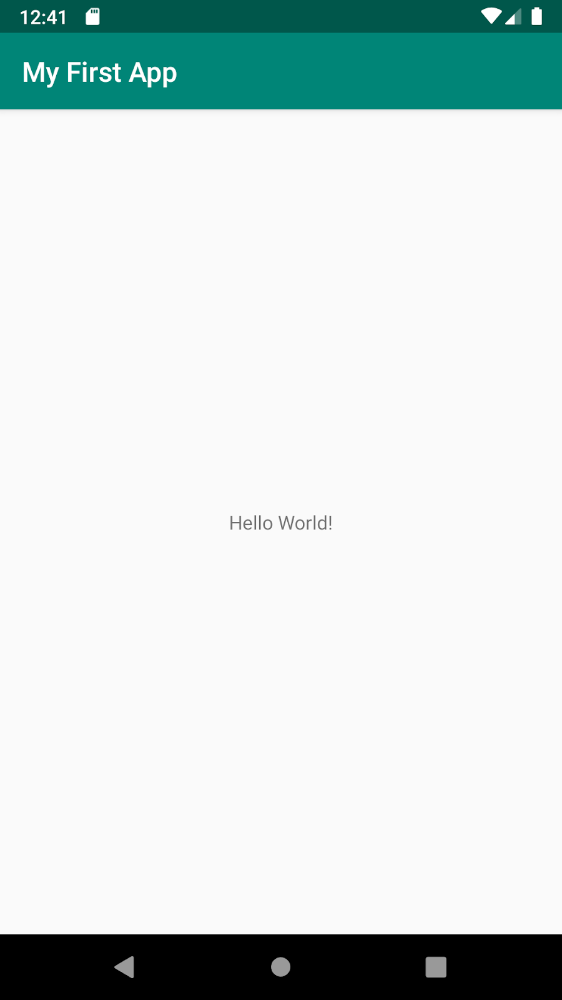
Create a new project
- Open Android Studio.
- In the main Welcome to Android Studio dialog, click Start a new Android Studio project.
- Select Empty Activity. Click Next.
- Give your application a name such as My First App.
- Accept the default example domain.
- Accept the default project location.
- In the Minimum API level, accept the default. Click Next.
- Click Finish.
After these steps, Android Studio:
- Creates a folder for your Android Studio project. This is usually in a folder called AndroidStudioProjects.
- Builds your project (this may take a few moments). Android Studio uses Gradle as its build system.
- Opens the code editor showing your project.
The Android Studio window should look similar to the following diagram:
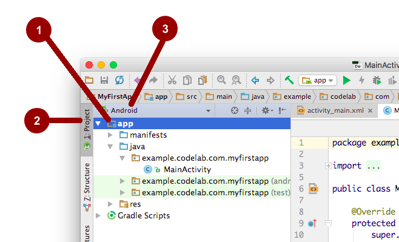
Explore the project structure and layout
You can look at the hierarchy of the files for your app in multiple ways.
- Click the app (1) folder to expand the hierarchy of files. (See 1 in the screenshot.)
- Click Project (2). You might need to select View > Tool Buttons to see this option.
- The current Project view selection is Project > Android. Click Android (3) to explore the other Project views that are available.
In the Project > Android view you see three top-level folders below your app folder: manifests, java, and res.
- Expand the manifests folder.
This folder contains AndroidManifest.xml. This file describes all the components of your Android app and is read by the Android runtime system when your app is executed. - Expand the java folder. All your Java language files are organized here. The java folder contains three subfolders:
com.example.android.myfirstapp (or the domain name you have specified): This folder contains the Java source code files for your app.
com.example.android.myfirstapp (androidTest): This folder is where you would put your instrumented tests. It starts out with a skeleton test file.
com.example.android.myfirstapp (test): This folder is where you would put your unit tests. It starts out with a skeleton unit test file. - Expand the res folder. This folder contains all the resources for your app, including images, layout files, strings, icons, and styling. It includes these subfolders:
drawable: All your app's images will be stored in this folder.
layout: This folder contains the layout files for your activities. Currently, your app has one activity that has a layout file called activity_main.xml.
mipmap: This folder contains the launcher icons for your app.
values: Contains resources, such as strings and colors, used in your app.
Run your app on a device (Recommended)
What you need:
- An Android device such as a phone or tablet.
- A data cable to connect your Android device to your computer via the USB port.
- If you are using a Linux or Windows OS, you may need to perform additional steps to run your app on a hardware device. Check the Run Apps on a Hardware Device documentation. On Windows, you may need to install the appropriate USB driver for your device. See OEM USB Drivers.
Run your app on a device
To let Android Studio communicate with your device, you must turn on USB Debugging on your Android device.
On Android 4.2 and higher, the Developer options screen is hidden by default. To show Developer options and enable USB Debugging:
- On your device, open Settings > About phone and tap Build number seven times.
- Return to the previous screen (Settings). Developer options appears at the bottom of the list. Tap Developer options.
- Enable USB Debugging.
Now you can connect your device and run the app from Android Studio.
- Connect your device to your development machine with a USB cable. On the device, you might need to agree to allow USB debugging from your development device.
- Click Run in the toolbar at the top of the window. (You might need to select View > Toolbar to see this option.) The Select Deployment Target dialog opens with the list of available emulators and connected devices.
- Select your device, and click OK.
Android Studio installs the app on your device and runs it.
Run your app on an emulator
Create a virtual device (emulator)
In this task, you will use the Android Virtual Device (AVD) manager to create a virtual device (also known as an emulator) that simulates the configuration for a particular type of Android device.
The first step is to create a configuration that describes the virtual device.
- In Android Studio, select Tools > Android > AVD Manager, or click the AVD Manager icon in the toolbar.
- Click +Create Virtual Device. (If you have created a virtual device before, the window shows all of your existing devices and the +Create Virtual Device button is at the bottom.) The Select Hardware dialog shows a list of preconfigured hardware device definitions.
- Choose a device definition, such as Nexus 5, and click Next. (It really doesn't matter which device definition you pick).
- In the System Image dialog, from the Recommended tab, choose Android Pie.
- If a Download link is visible next to a latest release, it is not installed yet, and you need to download it. If necessary, click the link to start the download, and click Next when it's done.
- In the next dialog box, accept the defaults, and click Finish.
- If the Your Virtual Devices AVD Manager window is still open, go ahead and close it.
Running the app on the emulator
- In Android Studio, select Run > Run app or click the Run icon in the toolbar.
In the Select Deployment Target dialog, under Available Virtual Devices, select the virtual device that you just configured and click OK.
The emulator starts and boots just like a physical device. Depending on the speed of your computer, this may take a while. You can look in the small horizontal status bar at the very bottom of Android Studio for messages to see the progress.
Once your app builds and the emulator is ready, Android Studio uploads the app to the emulator and runs it. You should see your app as shown in the following screenshot.
Troubleshooting
If you're stuck, quit Android Studio and restart it.
If Android Studio does not recognize your device, try the following:
- Disconnect your device from your development machine and reconnect it.
- Restart Android Studio.
If your computer still does not find the device or declares it "unauthorized":
- Disconnect the device.
- On the device, open Settings->Developer Options.
- Tap Revoke USB Debugging authorizations.
- Reconnect the device to your computer.
- When prompted, grant authorizations.
You may need to install the appropriate USB driver for your device. See the Using Hardware Devices documentation.
Check the latest Android Studio documentation.
In this task you will add two buttons to the user interface, as shown here:
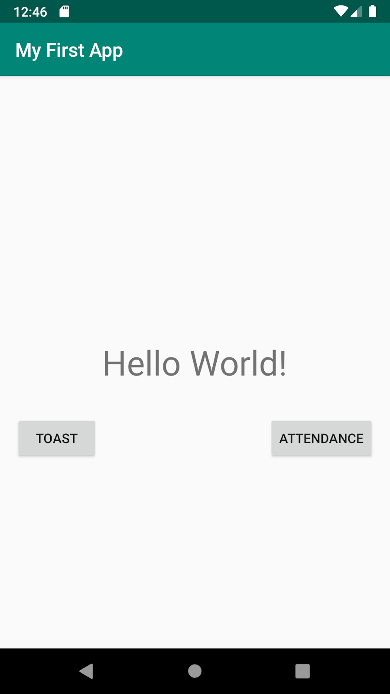
Open the layout editor
- Find and open the layout folder.
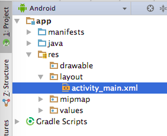
- Double-click activity_main.xml.
The panel on the right, called the layout editor, displays the content of this file. - At the bottom of the panel, notice the two tabs: Design and Text. Open the Text tab.
- The XML code that defines the layout appears in the Text tab.
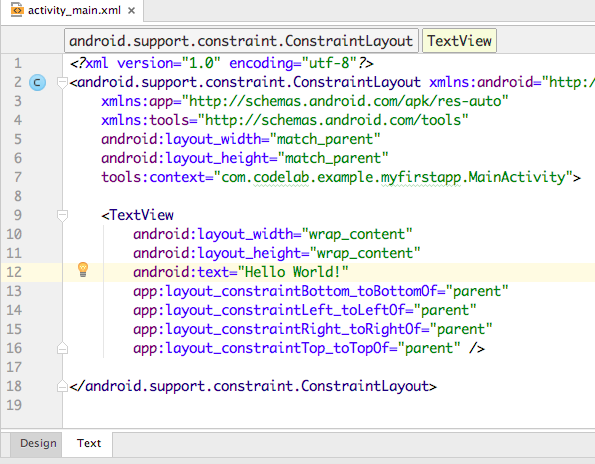
Change View Properties
Firstly, change the ConstraintLayout to a RelativeLayout.
Replace the android.support.constraint.ConstraintLayout on the second line of the XML file to RelativeLayout, as well as the last line of the XML.
Make sure you change the
- In the Text tab, you can now delete the following properties for the TextView.
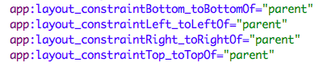 - Let us add an
idto this TextView to make it uniquely identifiable.
android:id="@+id/textView"- Right now, you can see in the preview tab on the right that the text size is really small. Let us increase the text size. Add a new property called
textSizeto the TextView in the XML file.
android:textSize="36sp"- Let us also move this TextView to the center of our screen by adding the following property:
android:layout_centerInParent="true"This property ensures we have center-aligned the TextView both horizontally as well as vertically.
- Now that our TextView is clear and noticeable, let us proceed to add more items.
At this point, your XML should look like this.
<?xml version="1.0" encoding="utf-8"?>
<RelativeLayout xmlns:android="http://schemas.android.com/apk/res/android"
xmlns:tools="http://schemas.android.com/tools"
android:layout_width="match_parent"
android:layout_height="match_parent"
tools:context=".MainActivity">
<TextView
android:id="@+id/textView"
android:layout_width="wrap_content"
android:layout_height="wrap_content"
android:text="Hello World!"
android:textSize="36sp"
android:layout_centerInParent="true"/>
</RelativeLayout>Add buttons to layout
- In the text tab, add a Button view and set its
layout_widthandlayout_heightproperties towrap_content, as shown (make sure to close the XML tags as shown below)
<Button
android:layout_width="wrap_content"
android:layout_height="wrap_content" />- Add an
idproperty to it, and set thetextproperty to "Button". You can place this property anywhere inside the Button view tag, the order is not important.
android:id="@+id/button"
android:text="Button"- Use the
layout_belowproperty to place the button below the TextView saying "Hello World". We will also add a property calledlayout_marginTopto the button as shown:
android:layout_below="@+id/textView"
android:layout_marginTop="32dp"- Add these lines to align the button slightly off of the left edge of the screen:
android:layout_alignParentLeft="true"
android:layout_marginLeft="16dp"- Your final code for the Button should look like this:
<Button
android:layout_width="wrap_content"
android:layout_height="wrap_content"
android:id="@+id/button"
android:text="Button"
android:layout_below="@+id/textView"
android:layout_marginTop="32dp"
android:layout_alignParentLeft="true"
android:layout_marginLeft="16dp" />- Now try adding a button yourself, but this time add it to the right side of the screen.
Try to implement the code for the second button without looking at the code snippet below.
Your final XML file should look like this:
<?xml version="1.0" encoding="utf-8"?>
<RelativeLayout xmlns:android="http://schemas.android.com/apk/res/android"
xmlns:tools="http://schemas.android.com/tools"
android:layout_width="match_parent"
android:layout_height="match_parent"
tools:context=".MainActivity">
<TextView
android:id="@+id/textView"
android:layout_width="wrap_content"
android:layout_height="wrap_content"
android:text="Hello World!"
android:textSize="36sp"
android:layout_centerInParent="true"/>
<Button
android:layout_width="wrap_content"
android:layout_height="wrap_content"
android:id="@+id/button"
android:text="Button"
android:layout_below="@+id/textView"
android:layout_marginTop="32dp"
android:layout_alignParentLeft="true"
android:layout_marginLeft="16dp" />
<Button
android:layout_width="wrap_content"
android:layout_height="wrap_content"
android:id="@+id/button2"
android:text="Button"
android:layout_below="@+id/textView"
android:layout_marginTop="32dp"
android:layout_alignParentRight="true"
android:layout_marginRight="16dp" />
</RelativeLayout>Get your UI ready for the next task
The next task is to make the buttons do something when they are pressed. Before learning how to make your buttons interactive, finish getting the UI ready.
Change the text and id of the buttons. Set the text and id as shown here:
Button | Text | id |
Left button | Toast | @+id/toast_button |
Right button | Attendance | @+id/attendance_button |
You have added buttons to your app's main screen, but currently the buttons do nothing. You'll fix that in the next task.
You have added buttons to your app's main screen, but currently, the buttons do nothing. In this task, you will make your button respond when the user presses the buttons.
First, you will make the Toast button show a pop-up message called a toast. Next, you will make the Count button update the number that is displayed in the TextView.
Show a toast
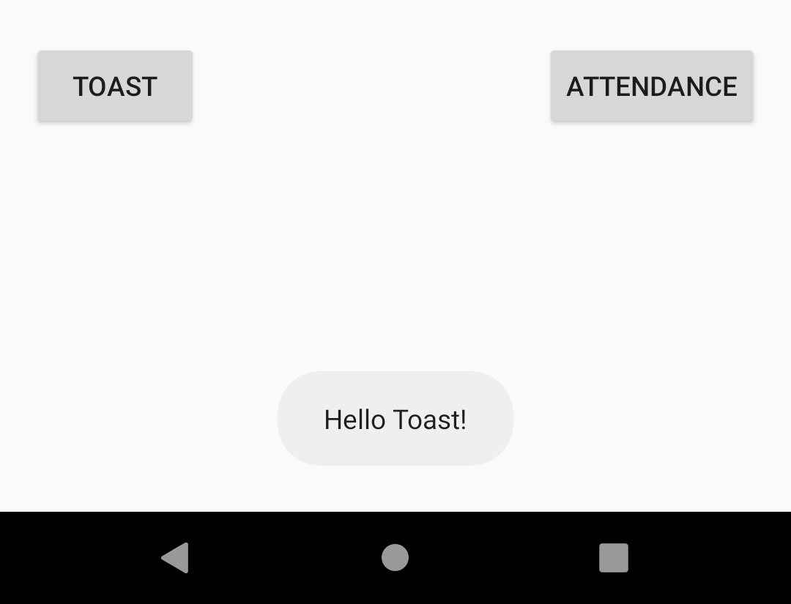
In this step, you will add a method to the Toast button to show a toast when the user presses it. A toast is a short message that appears briefly at the bottom of the screen.
- Open MainActivity.java. (Expand app > java > com.example.android.myfirstapp to find MainActivity).
This class has only one method, onCreate(). The onCreate() method executes when the activity starts. - Examine the onCreate() method. Notice the line that calls setContentView(). This line sets the layout of the activity to activity_main.xml.
setContentView(R.layout.activity_main);- Add a new method called toastMe() to the MainActivity class. The toastMe() method takes a single argument of a View. This is the view that receives the click event.
The method creates and shows a toast. Here is the code:
/**
* Show a toast
* @param view -- the view that is clicked
*/
public void toastMe(View view){
// Toast myToast = Toast.makeText(this, message, duration);
Toast myToast = Toast.makeText(this, "Hello Toast!", Toast.LENGTH_SHORT);
myToast.show();
}- In the Text tab for the layout file, add an android:onClick property to the Toast button. Set the value to toastMe.
android:onClick="toastMe"- Run the app and press the Toast button. Do you see the toasty message at the bottom of the screen?
So far, your app has a single screen. Now you will add a second activity that has its own screen.
You will update the Attendance button to display a second activity that shows your attendance has been recorded.
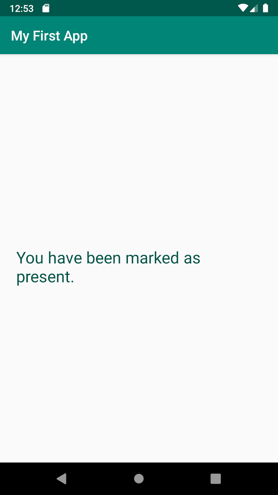
Create a new Activity
- Select the package name com.example.android.myfirstapp in apps > java > com.example.android.myfirstapp. (Make sure it is not the java (generated) folder)
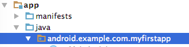
- Right click and select File > New > Activity > Empty Activity.
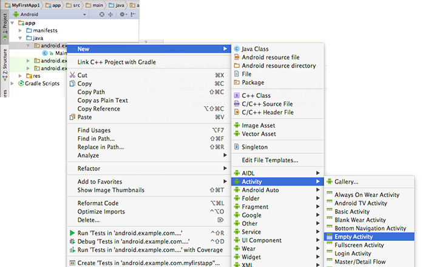
- In the "Configure Activity" wizard, change the activity name to SecondActivity.
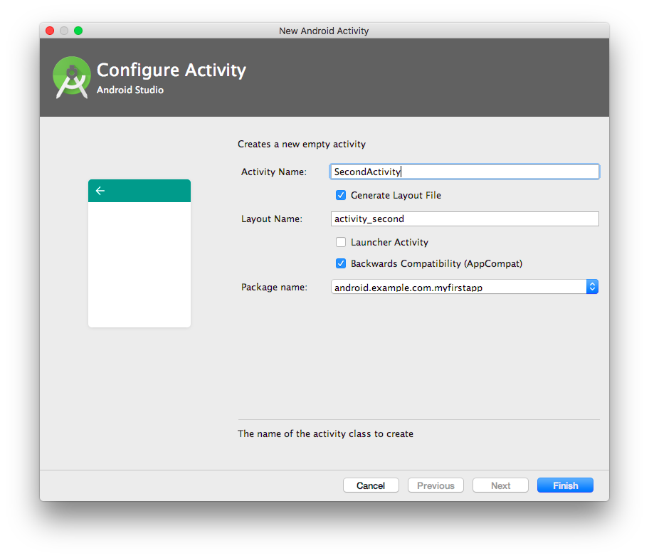
- Press Finish. Android Studio creates the Java file and the XML layout file for the new activity.
- Wait for the gradle sync to finish in Android Studio.
Gradle is the build system that Android Studio uses to compile and build the apps. You will see messages reporting the progress of the gradle build at the bottom of the screen.
Create the layout for the new activity
The screen for the new activity will be initially blank, we will now add a TextView to this.
Add a TextView for the message
- Open activity_second.xml. You see it has a ConstraintLayout that contains nothing. This is the default layout for activities created from the Empty Activity template.
- Add a TextView to the XML file. This TextView will be used to display the text on the screen.
- Set the width to wrap_content, but set the height to wrap_content, so the width and height will change as needed to match the content. Make sure you close the tag by typing
/>at the end. - Set the text to "You have been marked as present."
- Right click the text, and then click Extract the text into a string resource called attendance_heading, by clicking on the yellow bubble on the left and choosing the option Extract string resource. Alternatively you could select the text string and press option+Enter on a Mac or Alt+Enter on a Windows system.
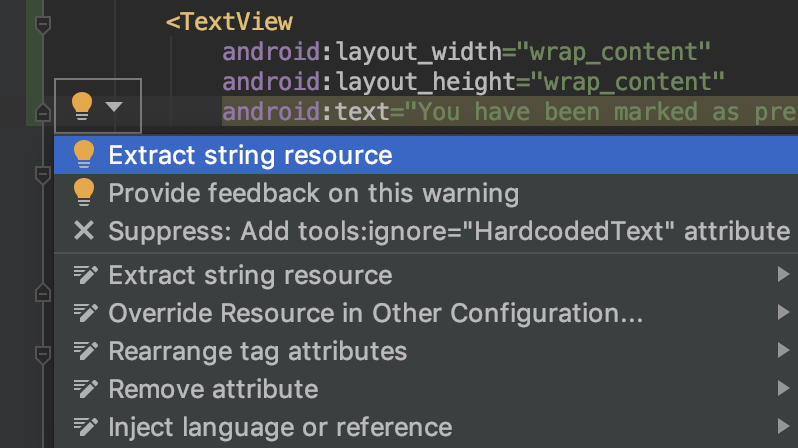
- Set the
idto @+id/attendance_label. - Set the text color to @color/colorPrimaryDark and the text size to 24sp.
- Add a property to center the view inside the parent
android:layout_centerInParent="true"
Here is the final XML code for the TextView that displays the heading:
<TextView
android:id="@+id/attendance_label"
android:layout_width="wrap_content"
android:layout_height="wrap_content"
android:text="@string/attendance_heading"
android:textColor="@color/colorPrimaryDark"
android:textSize="24sp"
android:layout_centerInParent="true" />Start the second activity
To start a new activity, you create an Intent, then call startActivity() with that Intent. You will do that now.
- Open the Java code for the main activity, MainActivity.java.
- Add a new method, markPresent(), that's invoked when the Attendance button is clicked.
Still could not figure out how to do it? Don't worry, we got you covered.
public void markPresent(View view) {
}- Add code to start the second activity inside the markPresent() method as shown:
public void markPresent(View view) {
// Create an Intent to start the second activity
Intent intent = new Intent(this, SecondActivity.class);
// Start the new activity.
startActivity(navigateIntent);
}- Is there anything else you need to do to associate this method with the Attendance button?
Yes there is. You need to add the onClick property to the Attendance button in the XML file.
android:onClick="markPresent"- Run the app. Click the Attendance button. The second activity appears.
Once you have successfully added Slang to your project, you will be able to see a Voice Trigger and on clicking the trigger you will see a surface pop up waiting for your speech input.
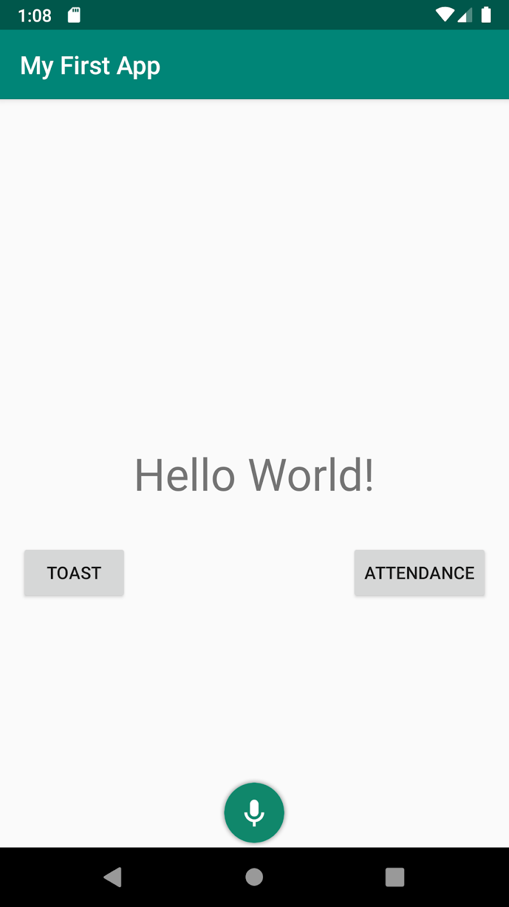 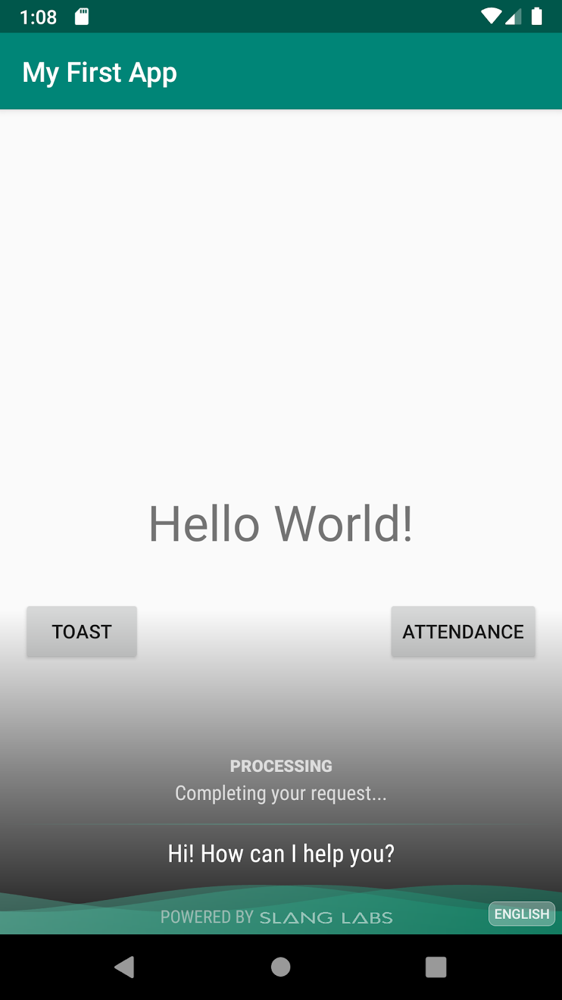
Android Activity Lifecycle
Before we deep dive into adding voice to our app, let us first take a look at the Android Activity lifecycle.
An activity is a single, focused thing that the user can do. Almost all activities interact with the user, so the Activity class takes care of creating a window for you in which you can place your UI with setContentView(View).
The lifecycle is the set of states an activity can be in during its entire lifetime, from when it's created to when it's destroyed and the system reclaims its resources. As a user navigates between activities in your app (as well as into and out of your app), activities transition between different states in their lifecycles.

- For more information, you can check out this Android developers documentation page explaining the Activity lifecycle.
- BONUS: You can also take a look at this answer from StackOverflow which takes an example and explains what each of the Activity lifecycle functions are supposed to be doing.
Add Voice to the app
For this codelab, we have abstracted the entire process of schema building and writing handlers to trigger actions in your app, and you can go ahead and voice enable your app just by following the steps below.
Add Slang dependency
- Open your app level
build.gradlefile (it would have (Module: app) written next to it) - Add the following line in the block of code under
dependencies.
implementation('in.slanglabs.sdk.android:slang_lib:1.0.17')- Now open your project level build.gradle file. Under
repositoriesunderallprojectsadd the path to Slang's maven repository.
allprojects {
repositories {
google()
jcenter()
maven {
url "http://maven.slanglabs.in:8080/artifactory/gradle-release"
}
}
}- Now click on Sync Now and wait for Project Sync to be completed.
Once the gradle sync finishes without any errors, you are good to go to the next step. This means you have successfully downloaded the Slang SDK in your project.
Add Java code to enable voice
- Download SlangInterface.java file from this link.
- Copy this file into the com.example.android.myfirstapp folder inside your java folder of your project.
- Open the SlangInterface file. You will see an init() function has been already written for you.
// To initialize Slang in your application, simply call SlangInterface.init(context)
static void init(Activity activity) {
try {
SlangBuddyOptions options = new SlangBuddyOptions.Builder()
.setApplication(activity.getApplication())
.setBuddyId(getAppId())
.setAPIKey(getApiKey())
.setListener(new BuddyListener(activity.getApplicationContext()))
.setIntentAction(new SlangAttendanceAction())
.setDefaultLocale(SlangLocale.LOCALE_ENGLISH_IN)
.setEnvironment(SlangBuddy.Environment.PRODUCTION)
.setConfigOverrides(getConfigOverrides())
.setStartActivity(activity)
.build();
SlangBuddy.initialize(options);
} catch (SlangBuddyOptions.InvalidOptionException e) {
e.printStackTrace();
} catch (SlangBuddy.InsufficientPrivilegeException e) {
e.printStackTrace();
}
}
- To initialize Slang, you will need to call this init() function from your MainActivity.java. Open MainActivity.java file
- In the onCreate function call the init() function to initialize Slang.
@Override
protected void onCreate(Bundle savedInstanceState) {
super.onCreate(savedInstanceState);
setContentView(R.layout.activity_main);
// this line initializes Slang in your app
SlangInterface.init(this);
}
The parameter this passes the current Activity as an argument to the init() function which is then provided to Slang as a parameter during initialization.
Run the app. You should now get a trigger and you can try saying the following phrases to mark your attendance:
- "Mark my attendance"
- "Hey I am present"
- "Mark attendance"
Congratulations! You have voice enabled your first app.